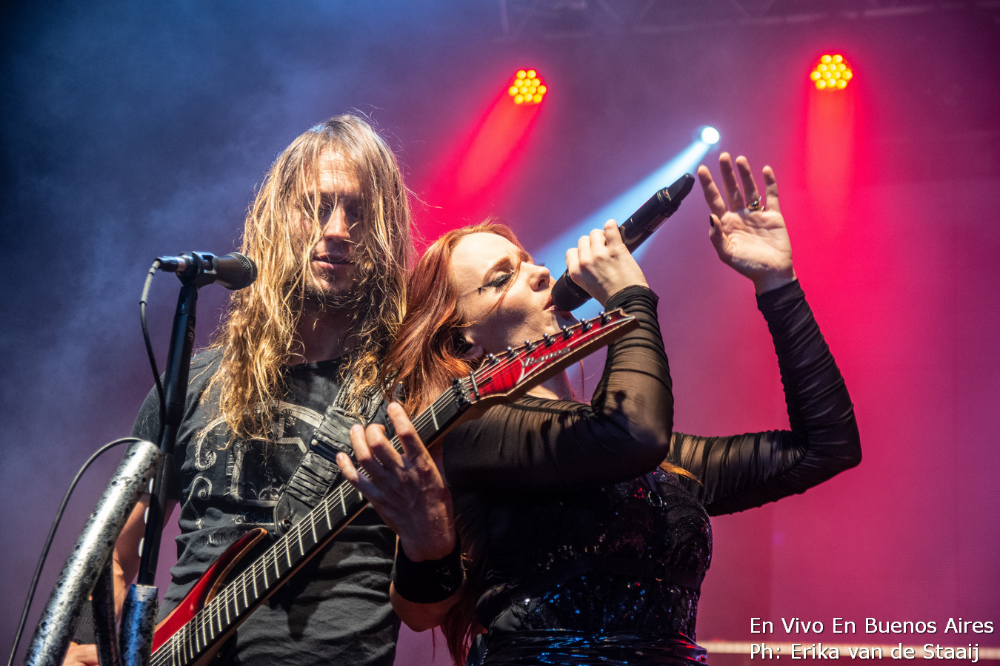

Recital de EPICA en CABA
El recital de EPICA en CABA fue una experiencia inolvidable. La banda, conocida por su potente sonido y letras profundas, hizo vibrar a todos los presentes.
La energía en el lugar era palpable, y cada canción era recibida con vítores y aplausos ensordecedores. EPICA demostró una vez más por qué es una de las bandas más queridas del metal sinfónico.
El setlist incluyó clásicos como "Cry for the Moon" y "Design Your Universe", así como temas de su último álbum, "Omega". La producción fue impresionante, con luces y efectos visuales que complementaban la música de manera espectacular.
Hospedaje que utilice
Me alojé en un hostel cercano al lugar del evento, lo que facilitó mucho el desplazamiento.
El hotel ofrecía un ambiente cómodo y estaba bien equipado para los fans que venían de otras ciudades.
Forma de llegar
El recital fue en el Teatro Flores, ubicado en el barrio de Flores, CABA. Se puede llegar fácilmente en transporte público, ya sea en colectivo o en subte.
Yo utilicé el subte A, estación Lima en Av. de Mayo.